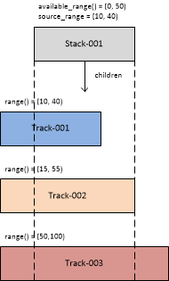
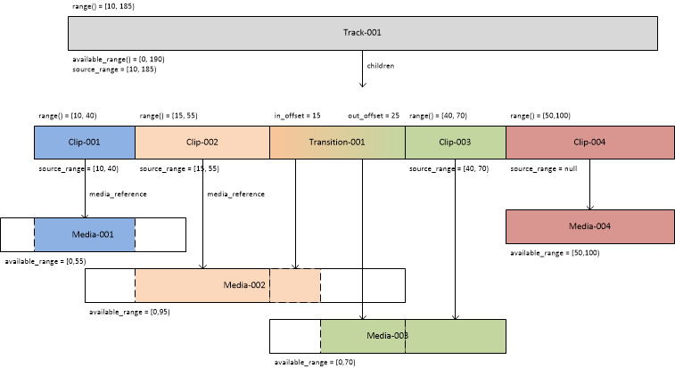

This document specifies the core OTIO data model, which is summarized below.
All OTIO classes derive directly or indirectly from SerializableObject and multiple instances of OTIO classes can be collected as a SerializableCollection.
Subclasses of MediaReference are defined to handle specific kinds of reference to media:
Similarly, subclasses of Effect are defined to handle specific kinds of audio-visual effects:
OMG, Unified Modeling Language Specification Version 2.5.1 (url: https://www.omg.org/spec/UML/2.5.1)
(https://tools.ietf.org/rfc/bcp/bcp14.txt)
IETF, BCP 14, Key words for use in RFCs to Indicate Requirement Levels (url: https://tools.ietf.org/rfc/bcp/bcp14.txt)
All sections are normative, unless otherwise indicated.
The model diagrams are specified using UML as specified in OMG UML. The diagram below illustrates the notation most commonly used in this specification.
The key words MAY, SHALL, SHALL NOT, SHOULD, and SHOULD NOT in this document are to be interpreted as described in IETF BCP 14.
This version of the document specifies a single version of the abstract OTIO object model, which consists of the unique set of class
and data type definitions specified herein.
Any modification to the requirements associated with these definitions results in a different version of the data model.
Each concrete representation of a particular version of the OTIO object model is called a serialization, and each serialization
shall specify a mechanism by which the version of the data model is signalled.
This document specifies a serialization using the JSON interchange format. Other serializations may exist.
In this serialization:
each descendent of the SerializableObject includes a OTIO_SCHEMA property, which is
altered whenever any requirements associated with a class is modified or added -- allowing an implementation to infer the version of the
object model;
abstract classes cannot be serialized and no schema definitions exist for them;
the serialization for both current and past versions of classes is specified; and
the process by which the serialization of an earlier version of a class is converted to a current version of the class is
specified.
Implementations shall accept the serialization of all versions of the data model specified herein.
Implementation should create a serialization of the current version of the data model unless:
compatibility with legacy implementations is required, in which case earlier version of a class may be serialized; or
the specification explicitly forbids the serialization to an earlier version of a class.
Superclass for all classes whose instances can be serialized.
This property identifies the object.
NOTE: This property is intended for human consumption and there are no uniqueness requirements for its value.
This property contains information that further describes the object.
"SerializableObject": { "anyOf" : [ { "$ref": "#/definitions/Composable" }, { "$ref": "#/definitions/Marker" }, { "$ref": "#/definitions/Effect" }, { "$ref": "#/definitions/MediaReference" }, { "$ref": "#/definitions/Timeline" }, { "$ref": "#/definitions/SerializableCollection" } ] }
A SerializableCollection object represents a generic container of other objects.
No timing relationship between its children objects is implied, in contrast to a Composition for example.
EXAMPLES: A bin of media, a bundle of timelines in a single file. Specifically, the AAF adapter will output a SerializableCollection that contains multiple Timelines when reading an AAF that contains multiple compositions. Also, the ALE adapter outputs a SerializableCollection of Clips. For some workflows a SerializableCollection and a Track could be used interchangably in practice, but we wanted SerializableCollection to be more generic and able to hold non-Composable objects like Markers, etc.
This property defines the timeline of the object.
"SerializableCollection": { "type": "object", "properties" : { "OTIO_SCHEMA" : { "anyOf" : [ { "const": "SerializableCollection.1" }, { "const": "SerializeableCollection.1", "deprecated": true } ] }, "name" : { "$ref": "#/definitions/NullableString" }, "metadata" : { "$ref": "#/definitions/MetadataObject" }, "children" : { "type" : "array", "items" : { "$ref": "#/definitions/SerializableObject" } } }, "required" : ["OTIO_SCHEMA"], "additionalProperties": false }
A Timeline object represents a complete project. The media timeline of the object is referenced by its tracks property.
EDITOR'S NOTE: Why can't Timeline derive from Stack?
This property defines the timeline of the object.
This property indicates the start of the object's timeline from the start of the timeline defined by the tracks property.
EDITOR'S NOTE: What is exactly global_start_time? What is it relative to?
This method returns the interval [global_start_time, tracks.range().duration()).
This method returns tracks.activeChildren(offset).
This method returns tracks.editOffsets(offset).
This method returns tracks.activeDescendants(offset);
"Timeline": { "type": "object", "properties" : { "OTIO_SCHEMA" : { "const": "Timeline.1" }, "name" : { "$ref": "#/definitions/NullableString" }, "metadata" : { "$ref": "#/definitions/MetadataObject" }, "global_start_time" : { "$ref": "#/definitions/NullableRationalTime" }, "tracks" : { "$ref": "#/definitions/Stack" } }, "required" : ["OTIO_SCHEMA"], "additionalProperties": false }
A Stack represents a collection of chidren Composable objects that are arranged such that their start times are coincident.
Most commonly, this would be a series of Track objects that contain Clip objects. The 0-time of those Track objects would be coincide with the 0-time of the Stack object.
The children objects are in compositing order, with later (towards top) children obscuring earlier (towards bottom) children. If a Stack object has three children, [A, B, C], C is above B which is above A.
The duration of a Stack is the duration of its longest child. If a child ends before the other children, then an earlier index child would be visible before it.
The timing model of a Stack object is illustrated below.

The method returns CompositionKind::Stack.
"Stack": { "type": "object", "properties" : { "OTIO_SCHEMA" : { "const": "Stack.1" }, "name" : { "$ref": "#/definitions/NullableString" }, "metadata" : { "$ref": "#/definitions/MetadataObject" }, "source_range" : { "$ref": "#/definitions/TimeRange" }, "markers" : { "type" : "array", "items" : {"$ref": "#/definitions/Marker"} }, "effects" : { "type" : "array", "items" : {"$ref": "#/definitions/Effect"} }, "children" : { "type" : "array", "items" : {"$ref": "#/definitions/Composable"} } }, "required" : ["OTIO_SCHEMA"] }
A Track represents a collection of chidren Composable objects that are arranged sequentially in time.
The duration of a Track is the sum of the duration of its children.
The timing model of a Track object is illustrated below.

This property uniquely identifies the kind of essence produced by the Track.
The following are two values are defined:
"Video""Audio"EDITOR'S NOTE: is a track always of a single kind?
The method returns CompositionKind::Track.
"Track": { "type": "object", "properties" : { "OTIO_SCHEMA" : { "anyOf" : [ { "const": "Track.1" }, { "const": "Sequence.1", "deprecated": true } ] }, "name" : { "$ref": "#/definitions/NullableString" }, "metadata" : { "$ref": "#/definitions/MetadataObject" }, "source_range" : {"$ref": "#/definitions/TimeRange"}, "markers" : { "type" : "array", "items" : {"$ref": "#/definitions/Marker"} }, "effects" : { "type" : "array", "items" : {"$ref": "#/definitions/Effect"} }, "children" : { "type" : "array", "items" : {"$ref": "#/definitions/Composable"} }, "kind" : { "$ref": "#/definitions/NullableString" } }, "required" : ["OTIO_SCHEMA", "kind"], "additionalProperties": false }
A Composable object defines a media timeline over a temporal range.
This property contains a reference to the parent of the object.
EDITOR'S NOTE: self.parent is null when the Composable object is a child of a SerializableCollection.
This property references the previous sibling of the object in the parent, if one exists.
This property references the next sibling of the object in the parent, if one exists.
This method indicates whether the object is visible.
This method returns false.
EDITOR'S NOTE: The inline code documentation is inconsistent. Does "visible" mean "produce visible output" or "contributes to the timeline" or ...? It looks like this is used only for the stacking algorithm... but how does it apply to audio tracks?
This method indicates whether the object is overlapping.
This method returns false.
EDITOR'S NOTE: It looks like this is primarily used in the code to differentiate Item and Transition objects. Why not differentiate them based on their root classes, or is it possible for an Item object to be overlapping?
This method returns the temporal interval over which the object timeline is defined.
"Composable": { "anyOf" : [ { "$ref": "#/definitions/Transition" }, { "$ref": "#/definitions/Item" } ] }
An Item object positions media on a media timeline. It can also hold effects (Effect objects) and markers (Marker objects).
This property modifies the interval of the object timeline -- see range().
NOTE: Usually source_range is within self.available_range() but this is not a requirement. Some use cases will intentionally ask for a Clip that is longer (or starts earlier) than the available media as a way to request that new media (a newly animated take, or newly recorded audio) be made to fill the requested source_range.
This property specifies Effect objects applied, in order, to the Item.
EDITOR'S NOTE: Why are effects and transitions different?
This property specifies Marker objects associated with the object.
This method returns returns true.
This method returns the temporal range over which media is available.
NOTE: This method always returns a valid TimeRange object.
This method returns:
self.source_range, if self.source_range is not null; orself.available_range(), otherwise.This method returns self.range().
EDITOR'S NOTE: Suggest replacing trimmed_range() with range(), which applies to Item objects as well as Transition objects.
"Item": { "anyOf" : [ { "$ref": "#/definitions/Gap" }, { "$ref": "#/definitions/Clip" }, { "$ref": "#/definitions/Composition" } ] }
This class represents an effect applied to its parent Item.
NOTE: Effect specialization is handled as subclasses since they affect timing, whereas transition and generators are handled as paramterized classes.
EDITOR'S NOTE: Should there be a properties property like with Transition.
This property identifies the effect.
NOTE: Ideally, Effect (or one of its subclasses) is subclassed to accurately
capture the semantics of a particular effect. It is not however expected that a
subclass exist for every single effect used in practice. Instead, the
effect_name property can be used to identify an effect more precisely than its
class can.
EXAMPLE 1: A complex time remap from a DCC might be represented as a
LinearTimeWarp in OTIO and have detailed retiming information placed in the
format-specific namespace in the metadata dictionary for that effect instance.
OTIO and other format adapters can treat that effect with the LinearTimeWarp
schema semantics, but if the original adapter is invoked it could still detect
the original effect type and translate it back accurately. Similarly, scripts
written by consumers of the OTIO representation might be able to reach in and
gather useful information even if the effect's behavior is represented by OTIO
in a "Lossy" way.
EXAMPLE 2: Example values include: "Blur", "Crop", "Flip".
"Effect": { "anyOf" : [ { "type": "object", "properties" : { "OTIO_SCHEMA" : { "const": "Effect.1" }, "name" : { "$ref": "#/definitions/NullableString" }, "metadata" : { "$ref": "#/definitions/MetadataObject" }, "effect_name" : { "$ref": "#/definitions/NullableString" } }, "require" : ["OTIO_SCHEMA"], "additionalProperties": false }, { "$ref": "#/definitions/TimeEffect" } ] }
Parent class for Effect objects that manipulate time.
"TimeEffect": { "anyOf" : [ { "type": "object", "properties" : { "OTIO_SCHEMA" : { "const": "TimeEffect.1" }, "name" : { "$ref": "#/definitions/NullableString" }, "metadata" : { "$ref": "#/definitions/MetadataObject" }, "effect_name" : { "$ref": "#/definitions/NullableString" } }, "require" : ["OTIO_SCHEMA"], "additionalProperties": false }, { "$ref": "#/definitions/FreezeFrame" }, { "$ref": "#/definitions/LinearTimeWarp" } ] }
A time warp that applies a linear scale across the entire parent Item.
This property specifies the linear time scalar applied to clip.
EXAMPLE: timescalar = 2.0 means double speed, and timescalar = 0.5 means half speed.
"LinearTimeWarp": { "type": "object", "properties" : { "OTIO_SCHEMA" : { "const": "LinearTimeWarp.1" }, "name" : { "$ref": "#/definitions/NullableString" }, "metadata" : { "$ref": "#/definitions/MetadataObject" }, "effect_name" : { "$ref": "#/definitions/NullableString" }, "time_scalar" : { "$ref": "#/definitions/NullableDouble" } }, "require" : ["OTIO_SCHEMA"], "additionalProperties": false }
This effect holds the first frame of the item for the duration of the parent Item.
The property shall be equal to 0.
"FreezeFrame": { "type": "object", "properties" : { "OTIO_SCHEMA" : { "const": "FreezeFrame.1" }, "name" : { "$ref": "#/definitions/NullableString" }, "metadata" : { "$ref": "#/definitions/MetadataObject" }, "effect_name" : { "$ref": "#/definitions/NullableString" }, "time_scalar" : { "const": 0 } }, "required" : ["OTIO_SCHEMA"], "additionalProperties": false }
This class holds metadata over time on a timeline.
EDITOR'S NOTE: Should MarkerColor allow any sRGB color value?
Range this marker applies to, relative to the Item this marker is attached to (e.g. the Clip or Track that owns this marker).
Color of the Marker object.
"Marker" : { "anyOf" : [ { "$ref": "#/definitions/Marker.1" }, { "$ref": "#/definitions/Marker.2" } ] }
"Marker.2" : { "type": "object", "properties": { "OTIO_SCHEMA" : { "const": "Marker.2" }, "name" : { "$ref": "#/definitions/NullableString" }, "metadata" : { "$ref": "#/definitions/MetadataObject" }, "marked_range" : { "$ref": "#/definitions/TimeRange" }, "color" : { "type": "string", "enum": ["PINK", "RED", "ORANGE", "YELLOW", "GREEN", "CYAN", "BLUE", "PURPLE", "MAGENTA", "BLACK", "WHITE"] } }, "required" : ["OTIO_SCHEMA"], "additionalProperties": false }
"Marker.1" : { "deprecated" : true, "type": "object", "properties": { "OTIO_SCHEMA" : { "const": "Marker.1" }, "name" : { "$ref": "#/definitions/NullableString" }, "metadata" : { "$ref": "#/definitions/MetadataObject" }, "range" : { "$ref": "#/definitions/TimeRange" }, "color" : { "type": "string", "enum": ["PINK", "RED", "ORANGE", "YELLOW", "GREEN", "CYAN", "BLUE", "PURPLE", "MAGENTA", "BLACK", "WHITE"] } }, "required" : ["OTIO_SCHEMA"], "additionalProperties": false }
NOTE: The range property in the deprecated Marker.1 serialization corresponds to the marked_range property in the data model.
A Transition object corresponds to an overlap between the previous and next Item objects in a Track objects. In common usage this is a video cross-dissolve, wipe, audio cross-fade, or blend between two Clip objects.
The timeline of the Transition object obj corresponds to the temporal transition from the first to second of the following coterminous intervals:
[obj.previous.range.end - obj.in_offset, obj.previous.range.end - obj.in_offset + obj.range().duration()) within the timeline of obj.previous, if it exists; and[obj.next.range.start - obj.out_offset, obj.next.range.start - obj.out_offset + obj.range().duration()) within the timeline of obj.next, if it exists.NOTE: Coterminous means that the two intervals overlap from start to end.
EDITOR'S NOTE: It is surprising that a transition at the start or end of a track generates a Gap whose duration is equal to in_offset or out_offset respectively, so that the duration of the Track is increased implicitly, but no Gap is generated when in_offset is larger than the previous sibling.
This property specifies the temporal overlap with the previous Item in the parent Composition object.
self.in_offset shall be equal to or greater than 0.
If self.previous is not null, then self.in_offset shall be smaller than or equal to self.previous.range().duration().
This property specifies the temporal overlap with the next Item in the parent Composition object.
self.out_offset shall be equal to or greater than 0.
If self.next is not null, then self.out_offset shall be smaller than or equal to self.next.range().duration().
This property identifies the kind of transition applied by the object.
This property specifies parameters for the transition applied by the object.
self.next shall be an Item object or null.
self.previous shall be an Item object or null.
This method returns true.
This method returns the interval [0, self.out_offset + self.in_offset).
"Transition" : { "type": "object", "properties": { "OTIO_SCHEMA" : { "const": "Transition.1" }, "name" : { "$ref": "#/definitions/NullableString" }, "metadata" : { "$ref": "#/definitions/MetadataObject" }, "in_offset" : { "$ref": "#/definitions/NullableRationalTime" }, "out_offset" : { "$ref": "#/definitions/NullableRationalTime" }, "transition_type" : { "$ref": "#/definitions/NullableString" }, "parameters" : { "type" : "object" } }, "required" : ["OTIO_SCHEMA", "transition_type"], "additionalProperties": false }
This class represents the absence of media.
This property is the duration of the gap.
This method returns false.
The method returns the interval [0, duration).
"Gap" : { "type": "object", "properties": { "OTIO_SCHEMA" : { "anyOf" : [ { "const": "Gap.1" }, { "const": "Filler.1", "deprecated": true } ] }, "name" : { "$ref": "#/definitions/NullableString" }, "metadata" : { "$ref": "#/definitions/MetadataObject" }, "markers" : { "type" : "array", "items" : {"$ref": "#/definitions/Marker"} }, "effects" : { "type" : "array", "items" : {"$ref": "#/definitions/Effect"} }, "source_range" : { "$ref": "#/definitions/TimeRange" }, "duration" : { "$ref": "#/definitions/NullableRationalTime" } }, "required" : ["OTIO_SCHEMA"], "additionalProperties": false }
A Clip object positions the media referenced by the media_reference property on its timeline.
A temporal offset t in the object timeline corresponds to the temporal offset t into the media referenced by the media_reference property.
The method returns:
self.media_reference.available_range if self.media_reference is not null and self.media_reference.available_range is not null; orTimeRange, otherwise.EDITOR'S NOTE: A zero-duration TimeRange is returned if the actual available_range of the underlying media is unknown.
This property references the media associated with the object.
"Clip" : { "type": "object", "properties": { "OTIO_SCHEMA" : { "const": "Clip.1" }, "name" : { "$ref": "#/definitions/NullableString" }, "metadata" : { "$ref": "#/definitions/MetadataObject" }, "markers" : { "type" : "array", "items" : {"$ref": "#/definitions/Marker"} }, "effects" : { "type" : "array", "items" : {"$ref": "#/definitions/Effect"} }, "source_range" : { "$ref": "#/definitions/TimeRange" }, "media_reference" : { "$ref": "#/definitions/MediaReference" } }, "required" : ["OTIO_SCHEMA"], "additionalProperties": false }
This class identifies media to be placed on the timeline.
This property indicates the temporal interval of media available.
This method indicates whether the media underlying the reference is available (is_missing_reference() === false) or missing (is_missing_reference() === true).
This method returns false.
"MediaReference" : { "anyOf" : [ { "$ref": "#/definitions/MissingReference" }, { "$ref": "#/definitions/ExternalReference" }, { "$ref": "#/definitions/GeneratorReference" }, { "$ref": "#/definitions/ImageSequenceReference"}, { "type": "null"} ] }
Reference to media via a URI.
This property is a URI to the media.
"ExternalReference" : { "type": "object", "properties": { "OTIO_SCHEMA" : { "const": "ExternalReference.1" }, "name" : { "$ref": "#/definitions/NullableString" }, "metadata" : { "$ref": "#/definitions/MetadataObject" }, "available_range" : { "$ref": "#/definitions/TimeRange" }, "target_url" : { "$ref": "#/definitions/NullableURI" } }, "required" : ["OTIO_SCHEMA", "available_range", "target_url"], "additionalProperties": false }
Generators are media references that become "generators" in editorial systems. For example, color bars or a solid color.
This property identifies the operation of the generator.
This property specifies parameters to be provided to the generator.
"GeneratorReference" : { "type": "object", "properties": { "OTIO_SCHEMA" : { "const": "GeneratorReference.1" }, "name" : { "$ref": "#/definitions/NullableString" }, "metadata" : { "$ref": "#/definitions/MetadataObject" }, "generator_kind" : { "$ref": "#/definitions/NullableString" }, "available_range" : { "$ref": "#/definitions/TimeRange" }, "parameters" : { "type" : "object" } }, "required" : ["OTIO_SCHEMA", "generator_kind"], "additionalProperties": false }
This class represents media for which a concrete reference is missing.
This method returns true.
"MissingReference" : { "type": "object", "properties": { "OTIO_SCHEMA" : { "const": "MissingReference.1" }, "name" : { "$ref": "#/definitions/NullableString" }, "metadata" : { "$ref": "#/definitions/MetadataObject" }, "available_range" : { "$ref": "#/definitions/TimeRange" } }, "required" : ["OTIO_SCHEMA"], "additionalProperties": false }
This class represents media that consist of a sequence of images, each referenced by a target_url.
This property is everything leading up to the file name in target_url.
This property is everything in the file name leading up to the frame number.
This property is everything after the frame number in the file name.
This property is the first frame number used in file names.
This property is the step between frame numbers in file names (every other frame is a step of 2).
This property is the frame rate if every frame in the sequence were played back (ignoring skip frames).
This property is the number of digits to pad zeros out to (e.x. frame 10 with a pad of 4 would be 0010).
This property allows hinting about how a consuming app should behave if an image for which a url is returned should be handled when missing from disk.
"ImageSequenceReference" : { "type": "object", "properties": { "OTIO_SCHEMA" : { "const": "ImageSequenceReference.1" }, "name" : { "$ref": "#/definitions/NullableString" }, "metadata" : { "$ref": "#/definitions/MetadataObject" }, "available_range" : { "$ref": "#/definitions/TimeRange" }, "target_url_base" : { "$ref": "#/definitions/NullableURI" }, "name_prefix" : { "$ref": "#/definitions/NullableString" }, "name_suffix" : { "$ref": "#/definitions/NullableString" }, "start_frame" : { "$ref": "#/definitions/NullableInteger" }, "frame_step" : { "$ref": "#/definitions/NullableInteger" }, "rate" : { "$ref": "#/definitions/NullableDouble" }, "frame_zero_padding" : { "$ref": "#/definitions/NullableInteger" }, "missing_frame_policy" : { "type": "string", "enum": ["error", "hold", "black"] } }, "required" : ["OTIO_SCHEMA"], "additionalProperties": false }
A Composition object arranges children Composable objects onto its timeline.
EDITOR'S NOTE: CompositionKind is unnecessary and all Stack-like (Track-like) objects should derive from Stack (Track)
The method returns the timing model of the object.
The method returns the interval [self.editOffsets()->first(), self.editOffsets()->last()).
NOTE: This method returns the children of the object that are active at offset offset within the object's timeline.
set children to an empty list
if self.compositionKind() = CompositionKind::Stack, then run the following steps for each element child of self.children, in order:
active to a new ActiveComposableactive.composable to a reference to childactive.offset to a reference to offsetactive to childrenotherwise, if self.compositionKind() = CompositionKind::Track, then:
current_offset to a new RationalTime()child of self.children, in order:
offset >= current_offset && offset < current_offset + child.range().duration:
active to a new ActiveComposableactive.composable to a reference to childactive.offset to a new offset - current_offset + child.range().startactive to childrencurrent_offset to current_offset + child.range().duration()return children
NOTE: This method returns the all descendents of the object that are active at offset offset within the object's timeline.
let actives be an empty sequence of ActiveComposable
let children be equal to activeChildren(offset)
run the following steps for each element child of children, in order:
child.composable is a Composition then append the return value of child.composable.activeDescendants(child.offset) to actives.child.composable is not a Composition then append child to actives.return actives;
NOTE: This method return the temporal offsets within the object's timeline where children, if any, become active or inactive.
set points to an empty set of RationalTime
append a new RationalTime(0) to points
if self.compositionKind() = CompositionKind::Stack, then:
child of self.children, in order:
child.range().duration() is not a member of points:
child.range().duration() to pointsotherwise, if self.compositionKind() = CompositionKind::Track, then:
child of self.children, in order:
current_offset to current_offset + child.range().duration()current_offset to pointsreturn points
"Composition" : { "anyOf" : [ { "$ref": "#/definitions/Track" }, { "$ref": "#/definitions/Stack" } ] }
Indicates that the Composable object at self.composable is active at offset self.offset.
Temporal value equal to the product of value and rate.
"RationalTime" : { "type": "object", "properties": { "OTIO_SCHEMA" : { "const": "RationalTime.1" }, "rate" : { "$ref": "#/definitions/NullableDouble" }, "value" : { "$ref": "#/definitions/NullableDouble" } }, "required" : ["OTIO_SCHEMA"], "additionalProperties": false }
"NullableRationalTime" : { "anyOf" : [ { "$ref": "#/definitions/RationalTime" }, { "type" : "null" } ] }
true or false.
UTF-8 string.
"NullableString" : { "anyOf" : [ { "type" : "string" }, { "type" : "null" } ] }
The value null exists for compatibility with legacy files and should not be written to new files.
URI as specified in RFC 3986.
The URI() constructor initializes the URI to an empty relative reference ("").
"NullableURI" : { "anyOf" : [ { "type" : "string", "format" : "uri-reference" }, { "type" : "null" } ] }
Integer in the range [- 263, 263 - 1].
"NullableInteger" : { "anyOf" : [ { "type": "integer" }, { "type" : "null" } ] }
Double (binary64) floating point number as defined in IEEE 754.
"NullableDouble" : { "anyOf" : [ { "type": "number" }, { "type" : "null" } ] }
A MetadataObject is a container of name-value pairs and can contain instances of
SerializableObject.
EXAMPLE: A MetadataObject instance can contain RationalTime and TimeRange instances.
"MetadataObject" : { "type" : "object" }
A MetadataObject instance is serialized as a single object as defined at www.json.org.
A processor shall read a JSON number value according to the first matching rule of the following list:
SerializableObject; orMetadataIntegerValue if the value includes neither a fraction (.) nor an exponent (e|E) delimiter; orMetadataDoubleValue otherwise.A processor shall write an Integer value as a JSON number with neither a fraction (.) nor an exponent (e|E) delimiter.
A processor shall write a Double value as a JSON number with at least one fraction (.) or one exponent (e|E) delimiter.
The temporal interval [start, end).
This constructor executes the following:
self.start = startself.end = endThis constructor executes the following:
self.start = new RationalTime()self.end = endThis method returns self.end - self.start.
"TimeRange" : { "anyOf" : [ { "type": "object", "properties": { "OTIO_SCHEMA" : { "const": "TimeRange.1" }, "duration" : { "$ref": "#/definitions/NullableRationalTime" }, "start_time" : { "$ref": "#/definitions/NullableRationalTime" } }, "required" : ["OTIO_SCHEMA"], "additionalProperties": false }, { "type" : "null" } ] }
An offset t in the timeline of a Timeline object obj is mapped to an offset in all its active descendant Item and Clip objects returned by obj.activeDescendents(t).
Collected JSON Schema definitions
d2a9ba1395233df9e75fee2dba3a9592ef487368